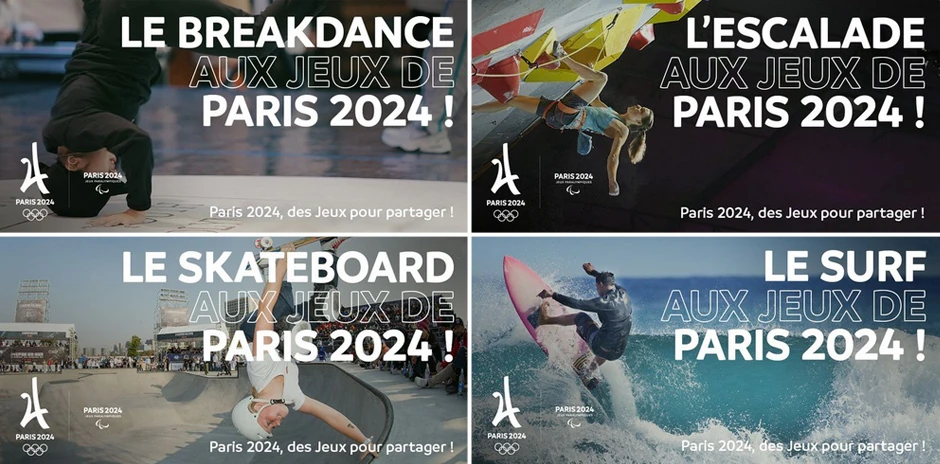
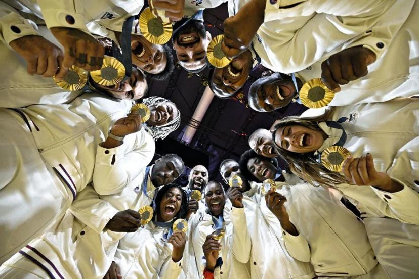
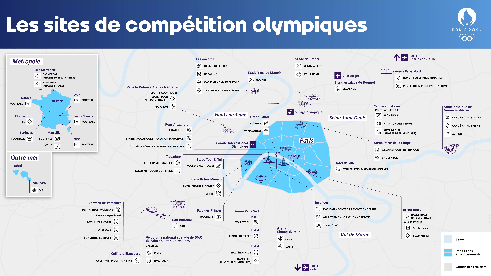

-
Venez vivre des moments forts avec les artistes !

-
Venez vivre des moments forts avec les athlètes !

-
Des nouvelles disciplines
 -
Venez encourager vos athlètes

-
Venez vivre des moments forts avec les artistes !

-
Venez vivre des moments forts avec les athlètes !

-
Des nouvelles disciplines

-
Venez encourager vos athlètes

Présentation des jeux olympiques de PARIS 2024
Les Jeux Olympiques sont un événement sportif mondial majeur, organisé tous les quatre ans, où les athlètes du monde entier se rencontrent pour participer à une série de compétitions. Créés par Pierre de Coubertin en 1896, les Jeux Olympiques modernes sont l'héritier des Jeux de l'Antiquité, qui se déroulaient à Olympie en Grèce. L'événement se divise en deux grandes catégories : les Jeux Olympiques d'été et les Jeux Olympiques d'hiver. Les compétitions se déroulent dans des villes hôtes sélectionnées à l'avance, et chaque édition attire des millions de spectateurs, à la fois sur place et à travers les médias. Les Jeux Olympiques sont symbolisés par cinq anneaux entrelacés, représentant les cinq continents unis dans la compétition pacifique. Ces Jeux sont bien plus qu'un simple concours sportif : ils incarnent des idéaux d'unité, de solidarité, de respect, et de dépassement de soi. Les athlètes s'affrontent pour décrocher des médailles d'or, d'argent et de bronze, mais également pour défendre les valeurs de l'amitié et de l'esprit sportif. Chaque édition des Jeux est l'occasion de célébrer non seulement l'excellence sportive, mais aussi la diversité culturelle et l'importance du respect mutuel à l'échelle mondiale. Les Jeux Olympiques sont un événement où l'athlète, le spectateur et la communauté mondiale se retrouvent dans un esprit de fraternité et d'accomplissement. Les Jeux Olympiques de Paris 2024 suscitent un grand enthousiasme à l'échelle mondiale, et ils sont particulièrement attendus en raison de la richesse historique et culturelle de la ville. Paris, qui accueille les JO pour la troisième fois (après 1900 et 1924), est un symbole fort de l’histoire des Jeux, et ces Jeux devraient refléter à la fois l'innovation moderne et la tradition. En somme, les Jeux Olympiques de Paris 2024 s'annoncent comme un événement marquant à la fois par son côté festif, inclusif, innovant et durable. Ils sont une occasion unique pour la France de mettre en lumière ses valeurs, sa culture et son rôle central sur la scène internationale tout en célébrant le sport dans toute sa diversité.
Paris 2024 met le paquet !
-
Accessibilité et inclusivité : Paris 2024 met un accent particulier sur l'accessibilité, en rendant les Jeux plus ouverts à un public plus large, avec des événements gratuits sur les quais de la Seine, par exemple. Il s’agit d'une volonté d’intégrer davantage de citoyens à cette fête internationale, notamment en permettant à des personnes de divers horizons d’assister aux compétitions sans forcément acheter des billets coûteux.
-
Durabilité et innovation : L’organisation des JO de Paris 2024 se distingue par un engagement fort en matière de développement durable. Les organisateurs ont promis des infrastructures plus écologiques, avec des constructions temporaires pour limiter l'empreinte carbone, et une attention particulière à la réutilisation des installations. Le village olympique, par exemple, sera réutilisé après les Jeux pour des logements et des équipements publics.
-
Une programmation modernisée : Paris 2024 va introduire plusieurs nouvelles disciplines, telles que le skateboard, le surf et l'escalade, qui devraient attirer un public plus jeune et diversifier l’audience. Cela reflète l’évolution des sports et les attentes des nouvelles générations.
-
La symbolique d'un événement à Paris : Paris est un carrefour culturel, artistique et historique, et cette dimension ne fait qu'ajouter de la magie à l'événement. Les compétitions se dérouleront dans des lieux emblématiques comme le Champ de Mars, le Grand Palais ou même la Seine, avec des sites qui ajoutent un cadre spectaculaire à la compétition.
-
Les enjeux logistiques et sécuritaires : Comme pour chaque grande organisation, les JO de Paris doivent gérer des défis logistiques et sécuritaires, notamment en raison des attentats survenus dans le passé. La préparation devra garantir une expérience sûre et fluide pour les athlètes et les spectateurs, ce qui représente un défi considérable dans une ville aussi vaste et dynamique que Paris.
L’organisation des jeux Olympique de Paris met l’acces sur les points suivants :
Fil d’actualité des jeux 2024
Calendrier
Les médailles

Les meilleurs moments
Quelques porteurs de la flamme Olympique
PARTENAIRES OFFICIELS